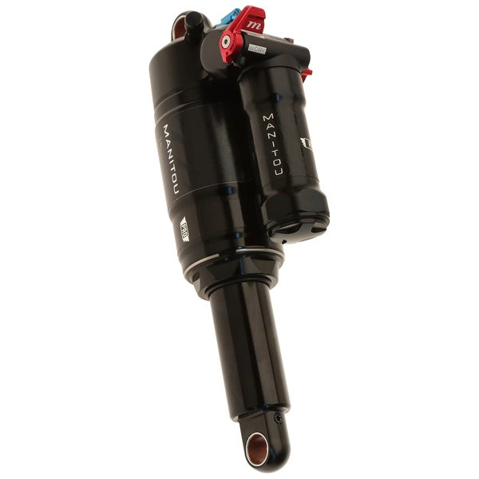
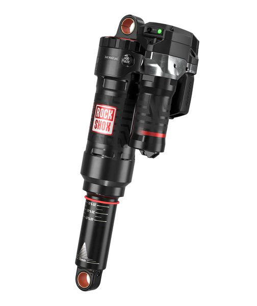

Rear Shocks
Fox Float X2 Factory
6500 pts · 21 tracked riders
Compare 13 rear shocks used by 63 tracked professional downhill riders. See rider count, competition points and associated profiles. The current points leader in this category is Fox Float X2 Factory.
6500 pts · 21 tracked riders


2476 pts · 9 tracked riders

1710 pts · 4 tracked riders

1124 pts · 4 tracked riders






This table records competitive usage within the RidersFanatics dataset. It does not claim that the first product is universally better, and race prototypes may differ from retail specifications.